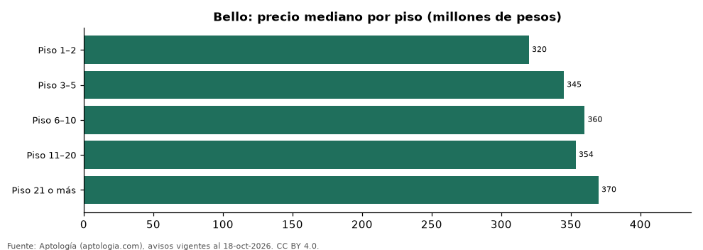

Apartamentos en venta en Bello según piso: precio y m² de cada grupo (octubre 2026)
Estudio con datos abiertos (CC BY 4.0). Versión original: https://github.com/elbroker/aptologia-datos/tree/main/estudios/apartamentos-en-venta-por-piso-bello-2026 · DOI: 10.5281/zenodo.23513134
En Bello, un apartamento en venta del grupo «Piso 1–2» se pide en 320 millones de pesos en la mediana y uno del grupo «Piso 21 o más» en 370 millones de pesos (+15,6 %). Por metro cuadrado, el más barato es «Piso 3–5» (4,44 millones de pesos/m²) y el más caro «Piso 6–10» (5,88 millones de pesos/m²).
Resumen: analizamos 1.446 apartamentos en venta en Bello con piso declarado.
Actualizado: 18 de octubre de 2026 (datos del 18 de octubre de 2026) · Próxima actualización: mensual.

Resumen
| Indicador | Valor |
|---|---|
| Piso 1–2 | 320 millones de pesos |
| Piso 3–5 | 345 millones de pesos |
| Piso 6–10 | 360 millones de pesos |
| Piso 11–20 | 354 millones de pesos |
| Piso 21 o más | 370 millones de pesos |
| Avisos | 1.446 |
Precio y m² por piso
| Piso | Precio (mediana) | Rango típico (P25–P75) | Por m² (mediana) | Área mediana (m²) | Avisos |
|---|---|---|---|---|---|
| Piso 1–2 | 320 millones de pesos | 270 millones de pesos – 394 millones de pesos | 4,57 millones de pesos | 67 | 179 |
| Piso 3–5 | 345 millones de pesos | 275 millones de pesos – 400 millones de pesos | 4,44 millones de pesos | 71 | 245 |
| Piso 6–10 | 360 millones de pesos | 295 millones de pesos – 430 millones de pesos | 5,88 millones de pesos | 62 | 267 |
| Piso 11–20 | 354 millones de pesos | 289 millones de pesos – 440 millones de pesos | 5,71 millones de pesos | 60 | 534 |
| Piso 21 o más | 370 millones de pesos | 295 millones de pesos – 470 millones de pesos | 5,65 millones de pesos | 65 | 221 |
Medianas del precio pedido; grupos con menos de 30 avisos se omiten.
Preguntas frecuentes
¿Cuánto cuesta comprar un apartamento en qué piso en Bello? Piso 1–2: 320 millones de pesos; Piso 3–5: 345 millones de pesos; Piso 6–10: 360 millones de pesos; Piso 11–20: 354 millones de pesos; Piso 21 o más: 370 millones de pesos (medianas de octubre de 2026).
¿Qué grupo sale más barato por m²? Por metro cuadrado, el más barato es «Piso 3–5» (4,44 millones de pesos/m²) y el más caro «Piso 6–10» (5,88 millones de pesos/m²).
Metodología
- Fuente: exportes nocturnos de la base de datos de Aptología (aptologia.com) del 18 de octubre de 2026: avisos vigentes de vivienda en portales inmobiliarios de 13 países, recogidos por Aptología y vistos en línea entre el 11 y el 18 de octubre de 2026. Corte: 18 de octubre de 2026.
- Depuración: se eliminan duplicados exactos (misma ciudad, zona, tipo, precio, moneda, área, habitaciones y baños) y los precios fuera del percentil 1–99 de cada país, operación, moneda y tipo; el precio por m² usa solo avisos con área declarada entre 12 y 2.000 m² y también se recorta al P1–P99.
- Qué se mide: precios pedidos (publicados), no precios de cierre. En arriendo, el canon mensual sin administración, gastos comunes ni condominio.
- Muestra mínima: cada cifra publicada se apoya en al menos 30 avisos; las celdas con menos se omiten.
- Colombia: Precios en pesos colombianos, sin conversión de moneda.
- Limitaciones: la cobertura depende de los portales que recorre Aptología en cada país y es mayor en las ciudades grandes y en los segmentos medio-alto y alto; el área es la que declara el aviso, sin verificar; los nombres de zona vienen de los portales.
- Privacidad: solo se publican agregados; no se publica ningún dato personal, enlace a avisos ni nombre de anunciante.
- Datos abiertos: datos.csv, licencia CC BY 4.0.
Cómo citar
Pinzón Pineda, D. M. (2026). Apartamentos en venta en Bello según piso: precio y m² de cada grupo (octubre 2026). Aptología (aptologia.com). https://github.com/elbroker/aptologia-datos/tree/main/estudios/apartamentos-en-venta-por-piso-bello-2026. Datos: datos.csv, licencia CC BY 4.0.